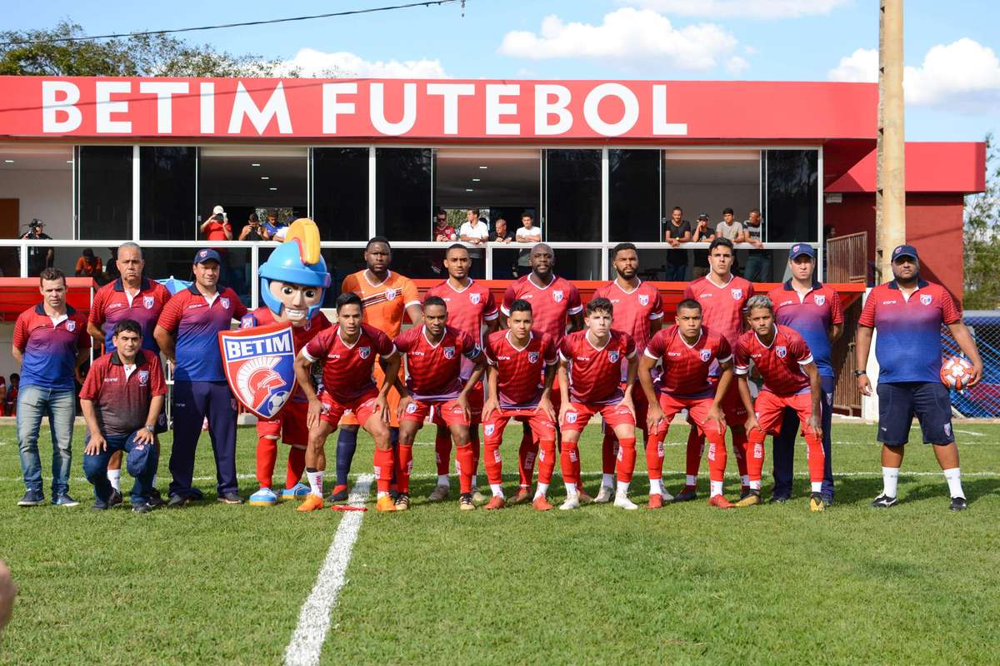
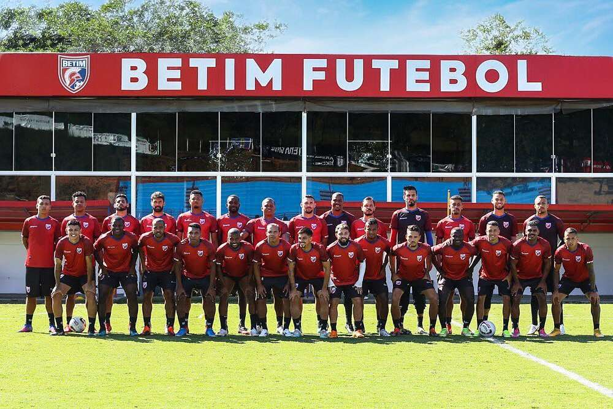
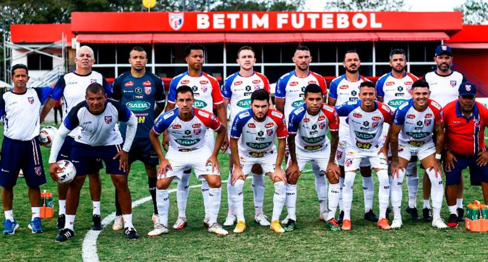
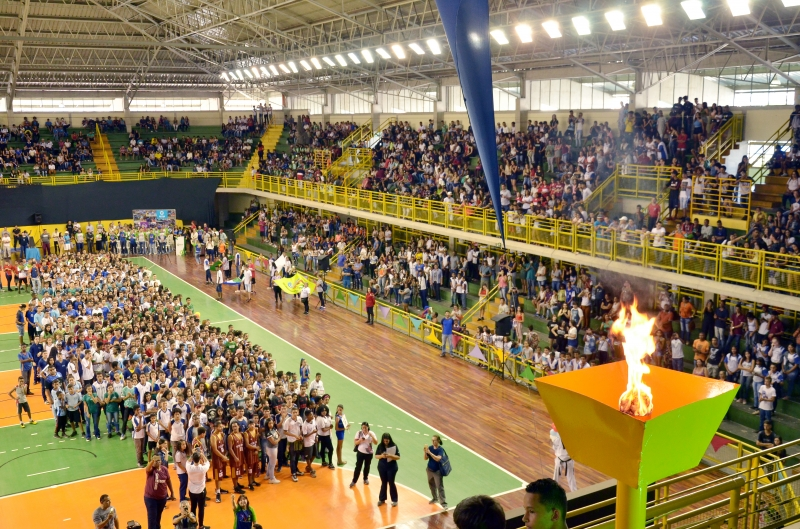
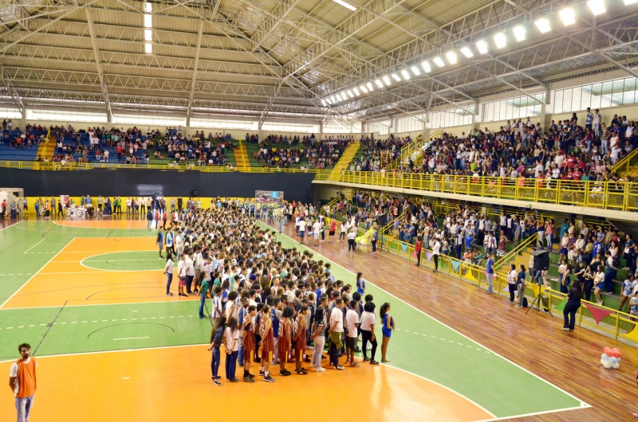

Historia do time do betim!!!!


O Betim Futebol é um clube brasileiro de futebol da cidade de Betim, no estado de Minas Gerais. Foi fundado em 2019 a partir da mudança de nome da AMDH (Associação Mineira de Desenvolvimento Humano), que já desenvolvia trabalho nas categorias de base.[1][2]
Atualmente a equipe joga o Campeonato Mineiro do Módulo II, equivalente a segunda divisão do campeonato estadual. Seu mascote é o Guerreiro, que representa o espírito de luta e a força.
História
No mesmo ano de sua fundação[3], o Betim Futebol estreou na Segunda Divisão do Campeonato Mineiro[4], ficando em segundo lugar, garantindo acesso para o Módulo II, no ano seguinte.
Em 2020, quase conseguiu o acesso à primeira divisão do campeonato estadual, porém, empatou a última partida do quadrangular final e permaneceu em 3º lugar. No Módulo II do Campeonato Mineiro, apenas as duas primeiras equipes do quadrangular final se classificam para o Módulo I[5].
Betim: sonho do acesso é interrompido pelo 3º ano consecutivo
Time da Cidade’ terminou fase final em terceiro, com 18 pontos e 60% de aproveitamento. Democrata-SL e Ipatinga voltam ao Módulo I do Campeonato Mineiro em 2023

O Betim Futebol ficou pelo caminho no Módulo 2 do Campeonato Mineiro pelo terceiro ano consecutivo. Nas últimas três campanhas, a equipe ficou a uma vaga de avançar na competição.
Em Juiz de Fora, Betim bate o Tupynambás por 4 a 0, mas não garante o acesso à elite do Mineiro
Repetindo o roteiro de 2020, o ‘Time da Cidade’ terminou a fase final em terceiro lugar, com 18 pontos (5V, 3E, 2D). No Mineiro, apenas duas equipes são promovidas à elite. Na fase inicial (classificatória), obteve 61% de aproveitamento, garantindo a primeira colocação (6V, 2E, 3D).
Já em 2021, a classificação também ficou no quase, mas naquela oportunidade a vaga era para o quadrangular final, com apenas quatro equipes avançando. Terminou em quinto.
Campanhas do Betim no Módulo 2
- 2020 – 3º lugar fase final;
- 2021 – 5º lugar classificatória (4 avançavam);
- 2022 – 3º lugar fase final;
Jogos Estudantis de Betim (JEB) retornam neste mês

Expectativa é que mais de 6 mil alunos de 60 escolas participem dos jogos;competição começa dia 26
A Prefeitura de Betim anunciou, nesta quinta-feira (4), o retorno dos Jogos Estudantis de Betim (JEB - 2022). A grande competição esportiva do município deve movimentar mais de seis mil alunos com idade entre 10 e 18 anos de 60 escolas das redes pública e privada de ensino, incluindo colégios estaduais e centros de educação inclusiva.
A abertura oficial do torneio será no dia 26 de agosto, às 13h, com a presença de todas as equipes participantes, no Ginásio Poliesportivo Divino Braga. As partidas terão início no dia 27 de agosto, com etapa final prevista para o dia 6 de novembro.
As modalidades serão divididas em três categorias, por gênero e faixa etária. Neste ano, os esportes coletivos disputados serão basquete, futsal, handebol, vôlei de quadra, vôlei de praia e peteca; e os esportes individuais serão tênis de mesa, atletismo e xadrez. Dentre as modalidades paralímpicas estão atletismo, bocha e uma novidade: o golfe 7, com os alunos do Centro de Referência e Apoio à Educação Inclusiva Rafael Veneroso (Craei-RV).
As inscrições para o JEB começaram na última segunda-feira (1º) e vão até a próxima quarta-feira (10). Cerca de 40 escolas já inscreveram os alunos participantes e estão em fase de formação e treinamento das equipes. A Secretaria de Esportes prevê a realização de 684 jogos, sempre de sexta a domingo, durante os meses da competição. As partidas no Horto Municipal e nos demais complexos esportivos da cidade serão abertas ao público.
“É uma competição da cidade que cresce a cada edição e que é muito importante para o desenvolvimento do esporte em Betim. Agradeço a todos os envolvidos na realização do JEB e espero que os estudantes possam realizar belas partidas”, pontua o secretário municipal de Esportes, Carlos Renato Dias (Renato Ti-Rei).
Durante a competição, a Prefeitura de Betim disponibilizará aos alunos mais de 24 mil lanches e 48 mil vales-transportes para o deslocamento até o local dos jogos. Serão ainda entregues 216 troféus e mais de duas mil medalhas para os vencedores. O público estimado para a edição deste ano será de 15 a 20 mil pessoas, uma vez que o evento busca reunir toda a comunidade escolar, incluindo familiares e amigos dos estudantes.

Depois de dois anos com os motores desligados por conta das restrições impostas pela pandemia da Covid-19, a Copa CDL O Tempo Betim de Kart vai esquentar a pista do kartódromo internacional da cidade novamente. A 12ª edição do evento está marcada para acontecer de 31 de agosto a 29 de outubro. As inscrições já estão abertas e podem ser feitas na sede da Câmara de Dirigentes Lojistas (rua Vicência Maria de Jesus, 375, Jardim da Cidade) ou por meio do site da copa até o início da competição, no mês que vem.
Tão tradicional quanto o evento principal, a “karteata” também está de volta neste ano para aquecer os participantes e o público saudoso. A largada será na praça Milton Campos, na região central, às 8h, no dia 13 de agosto.
“A Copa Kart, que se tornou tradição na cidade, foi criada para reunir empresários, promover o network e criar momentos de lazer e confraternização entre eles, fortalecendo cada vez mais o cenário do comércio em Betim”, afirma o presidente da CDL Betim, José Barboza.
De acordo com o regulamento, podem participar da competição pilotos a partir de 16 anos (menores de 18 precisam da autorização dos responsáveis legais). A disputa terá quatro categorias divididas em oito etapas: Super Kart, Intermediária, Light e Musas. As três primeiras terão duração de 25 minutos cada, e a última, de 15 minutos. Paralelamente às corridas, acontecerá o Musa do Kart, que vai destacar a beleza, a simpatia e a desenvoltura das participantes na pista e na passarela.
“Esperamos fazer uma grande festa. Serão praticamente dois meses de torneio. A nossa expectativa é das melhores. As pessoas estão carentes desse evento e pedindo para que ele seja retomado”, completa Barboza.
VEJA TAMBÉM
OBRIGADO PELA ATENÇÃO
PÁGINA INICIAL